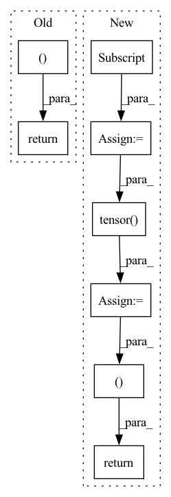

Pattern ID :27030

Before Change
data_train = (data_train - mu) / s
data_test = (data_test - mu) / s
return torch.tensor(data_train), torch.tensor(data_test)
def load_hepmass(path):
After Change
data_test = data[-N_test:]
data = data[0:-N_test]
N_validate = int(0.1 * data.shape[0])
data_validate = data[-N_validate:]
data_train = data[0:-N_validate]
// Normalization
data = np.vstack((data_train, data_validate))
mu = data.mean(axis=0)
s = data.std(axis=0)
data_train = (data_train - mu) / s
data_validate = (data_validate - mu) / s
data_test = (data_test - mu) / s
// To tensor
data_train = torch.tensor(data_train)
data_validate = torch.tensor(data_validate)
data_test = torch.tensor(data_test)
return data_train, data_validate, data_test
def load_hepmass(path):
In pattern: SUPERPATTERN
Frequency: 3
Non-data size: 8
Instances
Fragment ID: 80455771
Project Name: vincentstimper/resampled-base-flows
Commit Name: d131fe9a56eb2c670f3fe50d2a0d8ae4ea2628d9
Time: 2021-10-05
Author: vincent.stimper@gmail.com
File Name: larsflow/data.py
M Class Name: AnonimousClass
N Class Name: AnonimousClass
M Method Name: load_miniboone(1)
N Method Name: load_miniboone(1)
M Parent Class:
N Parent Class:
M File Name: larsflow/data.py
N File Name: larsflow/data.py
M Start Line: 38
M End Line: 49
N Start Line: 40
N End Line: 58
'>
Before Change
carray = bcolz.carray(rootdir = os.path.join(path, name), mode = "r")
issame = np.load("{}/{}_list.npy".format(path, name))
return carray, issame
def get_val_data(data_path):
lfw, lfw_issame = get_val_pair(data_path, "lfw")
After Change
batch = batch[:,::-1,:,:]
cropped = torch.tensor(batch.copy())
batch = batch[:,:,:,::-1]
flipped = torch.tensor(batch.copy())
issame = np.load("{}/{}_list.npy".format(path, name))
print("loading %s done"%(name), cropped.size())
sys.stdout.flush()
return [cropped, flipped], issame
def get_val_data(data_path, data_set):
val_data = []
'>
Fragment ID: 80455763
Project Name: cavalleria/cavaface
Commit Name: d4fa28736b74b61b2c4272dc60254741057225c2
Time: 2020-11-25
Author: 605370459@qq.com
File Name: util/utils.py
M Class Name: AnonimousClass
N Class Name: AnonimousClass
M Method Name: get_val_pair(2)
N Method Name: get_val_pair(2)
M Parent Class:
N Parent Class:
M File Name: util/utils.py
N File Name: util/utils.py
M Start Line: 27
M End Line: 30
N Start Line: 39
N End Line: 53
'>
Before Change
data_train = data_train[:, ind]
data_test = data_test[:, ind]
return torch.tensor(data_train), torch.tensor(data_test)
// Dictonary of UCI data loaders
uci_loader = {"miniboone": load_miniboone,
After Change
// Get validation dataset
N = data_train.shape[0]
N_validate = int(N * 0.1)
data_validate = data_train[-N_validate:]
data_train = data_train[0:-N_validate]
// To tensor
data_train = torch.tensor(data_train)
data_validate = torch.tensor(data_validate)
data_test = torch.tensor(data_test)
return data_train, data_validate, data_test
// Dictonary of UCI data loaders
uci_loader = {"miniboone": load_miniboone,
'>
Fragment ID: 80455765
Project Name: vincentstimper/resampled-base-flows
Commit Name: d131fe9a56eb2c670f3fe50d2a0d8ae4ea2628d9
Time: 2021-10-05
Author: vincent.stimper@gmail.com
File Name: larsflow/data.py
M Class Name: AnonimousClass
N Class Name: AnonimousClass
M Method Name: load_hepmass(1)
N Method Name: load_hepmass(1)
M Parent Class:
N Parent Class:
M File Name: larsflow/data.py
N File Name: larsflow/data.py
M Start Line: 91
M End Line: 94
N Start Line: 100
N End Line: 114